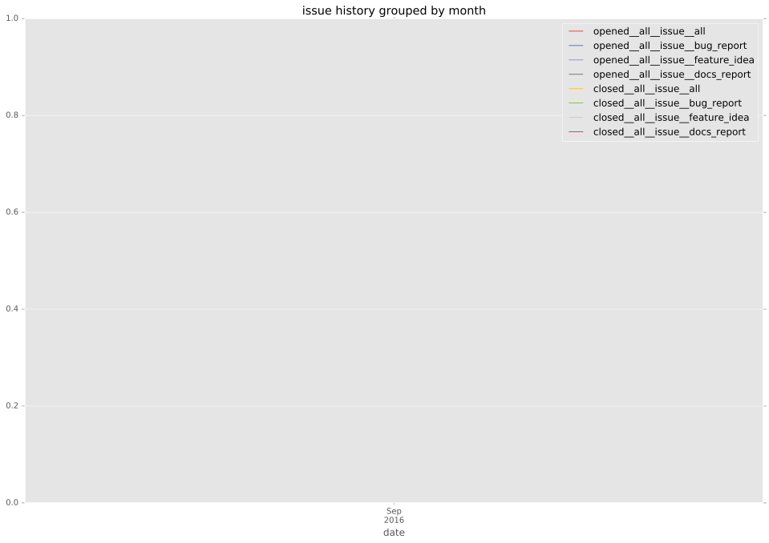
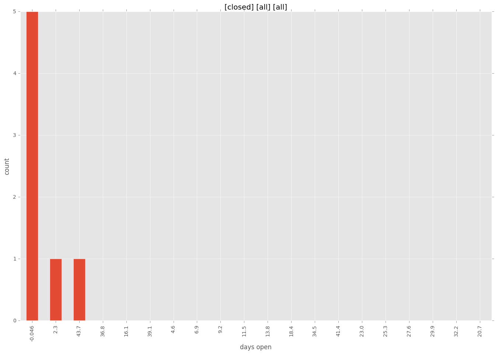
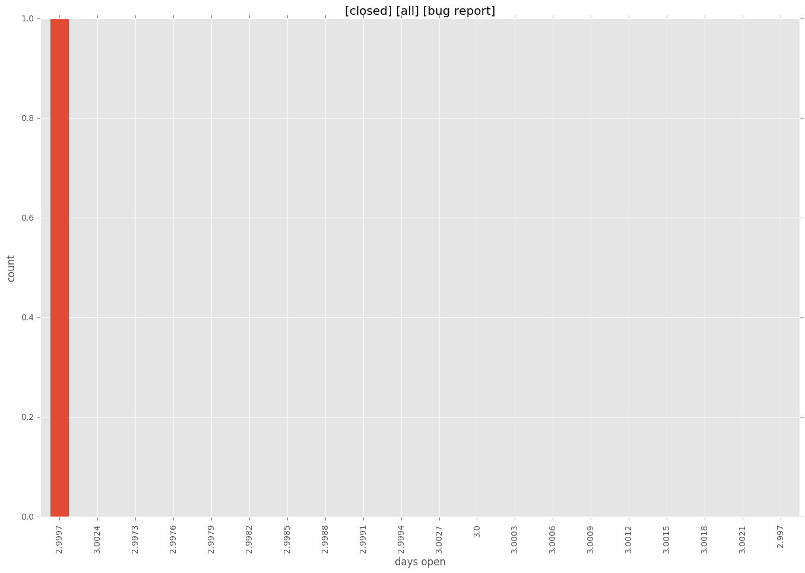
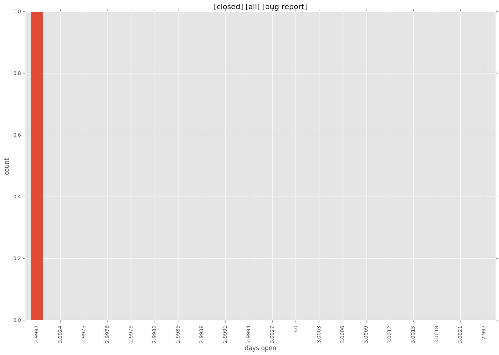
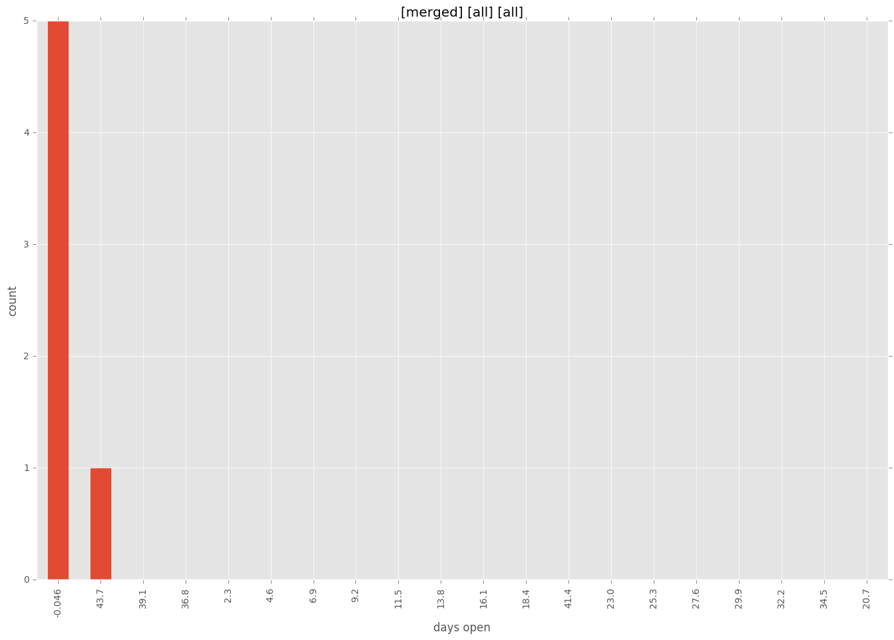
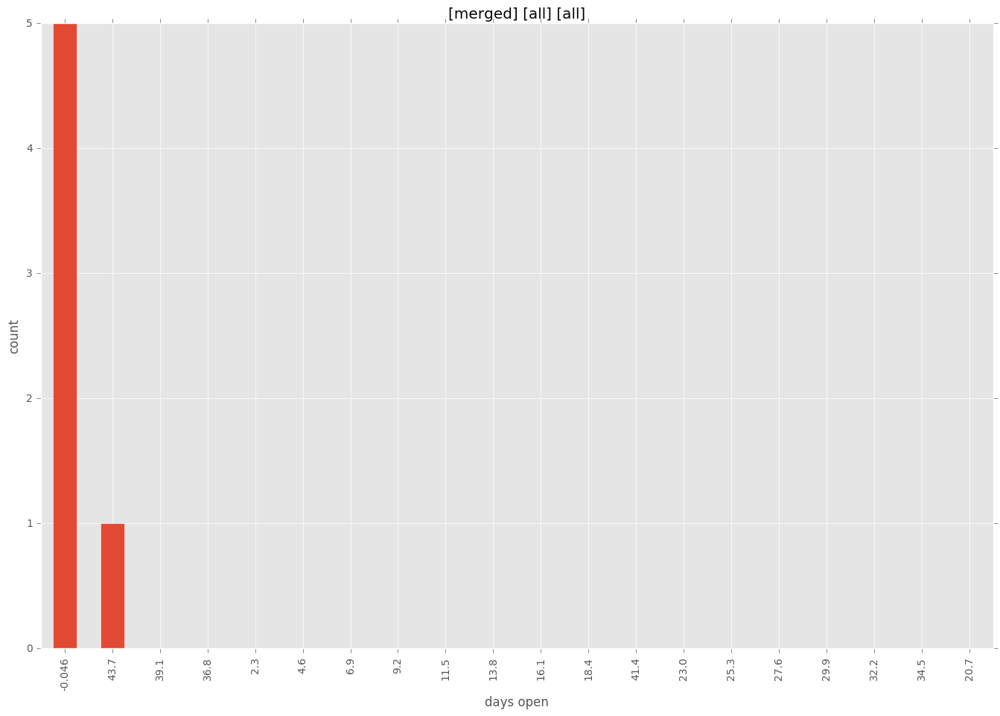

total issue counts
bugfix pull request: 5
pullrequest: 6
issue: 1
new plugin: 1
bug report: 1
issue history

days open by issue type
all
count: 13
std: 17.1919778549
min: 0
max: 46
median: 0.0
mean: 7.30769230769
pullrequest
count: 0
std: nan
min: nan
max: nan
median: nan
mean: nan
bugfix pull request
count: 10
std: 0.0
min: 0
max: 0
median: 0.0
mean: 0.0
issue
count: 0
std: nan
min: nan
max: nan
median: nan
mean: nan
new plugin
count: 2
std: 0.0
min: 46
max: 46
median: 46.0
mean: 46.0
bug report
count: 1
std: nan
min: 3
max: 3
median: 3.0
mean: 3.0
closures grouped by total days open

 


 
